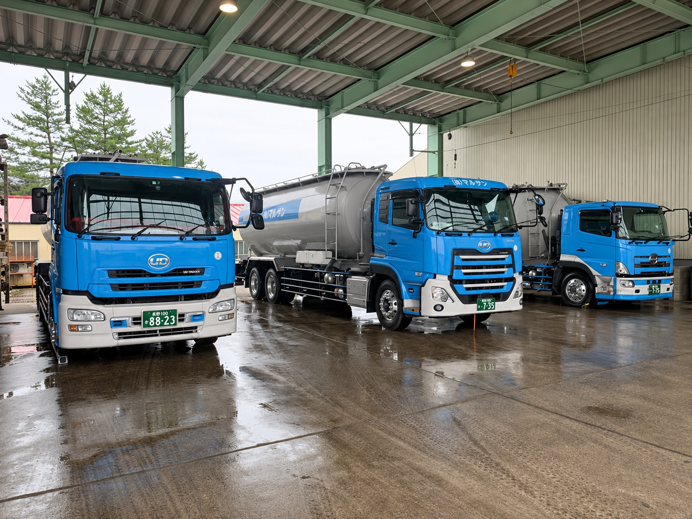
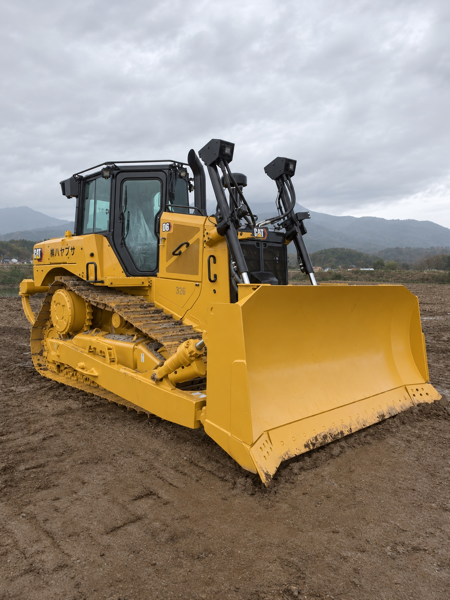
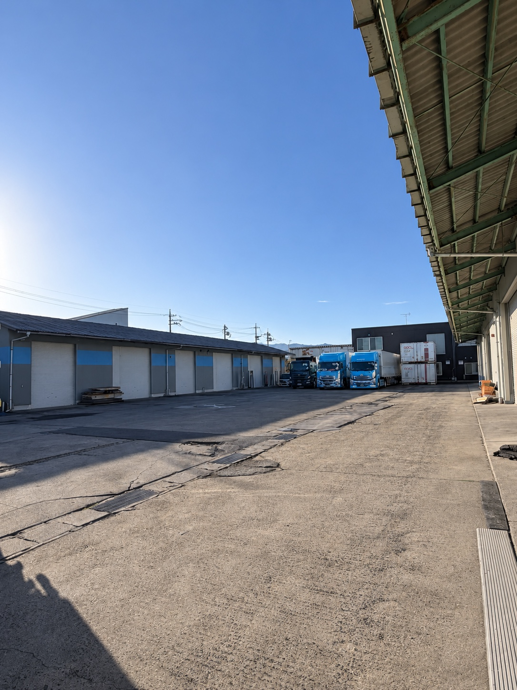

設備・車両
K.K HAYABUSA

仕事の幅を広げる、
車両と設備。
荷物や現場に合わせて動けるように。輸送車両から採掘・荷役の重機、自社倉庫まで、ハヤブサの対応力を支える設備をご紹介します。
FLEET & FACILITIES
現場を支える、自社の設備。
車両・重機は2026年11月1日現在
輸送・車両対応
トレーラーヘッド2台
- 珪藻土タンク車 3台
- 重機回送車 2台
- 土砂ダンプ 5台（うちガンダンプ1台）
- 深ダンプ 40㎥・38㎥ 各1台
- レッカー車 1台（2027年春に新車導入予定）
採掘・荷役設備

油圧ショベル7台
- 小型油圧ショベル 1台を含む
- ブルドーザー D4・D6 各1台
- フォークリフト 3t・2.5t 各1台
- 不整地ダンプ 16t積み 1台
- 75psトラクター 3台
- ロータリー除雪機 23ps・16ps 各1台
自社の拠点設備

自社倉庫2棟
- A棟 240坪 / B棟 113坪
- 所在地：倉吉市秋喜379-2
- 大型車・トレーラー乗り入れ可
FLEET LIST
保有車両・重機の一覧
27項目を表示しています。
| 区分 | 車両・設備 | 台数・補足 |
|---|---|---|
| トレーラー | トレーラーヘッド | 2台 |
| トレーラー | トレーラーウィング12m車 | 1台 |
| トレーラー | JRコンテナ2基積み車 | 1台 |
| トレーラー | 木質チップスライドデッキ70㎥ | 1台 |
| 大型トラック | 4軸低床ウィング10mボディ車 | 1台 |
| 大型トラック | 木質スライドデッキ50㎥ | 1台 |
| 大型トラック | 重機回送車 | 2台 |
| 大型トラック | 珪藻土タンク車 | 3台 |
| 大型トラック | 土砂ダンプ | 5台（うちガンダンプ1台） |
| 大型トラック | レッカー車 | 1台（2027年春に新車導入予定） |
| 大型トラック | 深ダンプ40㎥・38㎥ | 各1台 |
| 小型トラック等 | 3t積みウイング車 | 1台 |
| 小型トラック等 | 積載車（営業ナンバー） | 1台 |
| 小型トラック等 | 重機燃料給油990L車 | 1台 |
| 小型トラック等 | レッカー誘導車 | 1台 |
| 小型トラック等 | 軽トラック | 2台 |
| 重機 | 油圧ショベル 0.9 | 1台 |
| 重機 | 油圧ショベル 0.7 | 2台（うち小旋回1台） |
| 重機 | 油圧ショベル 0.45・小旋回 | 1台 |
| 重機 | 油圧ショベル 0.25・グラップル付き | 2台 |
| 重機 | 小型油圧ショベル | 1台 |
| 重機 | ブルドーザー D4・D6 | 各1台 |
| 重機 | 不整地ダンプ16t積み | 1台 |
| トラクター | 75psトラクター | 3台 |
| 草刈用機器 | スライドモア・モア・アームモア | 各1台 |
| フォークリフト | 3t車・2.5t車 | 各1台 |
| ロータリー除雪機 | 23ps・16ps | 各1台 |
レッカー車は2027年春に新車導入を予定しています。
BASE
倉吉の自社倉庫
CONTACT
次の仕事も、
一緒に考えます。
輸送・車両対応・現場業務について、ご相談ください。